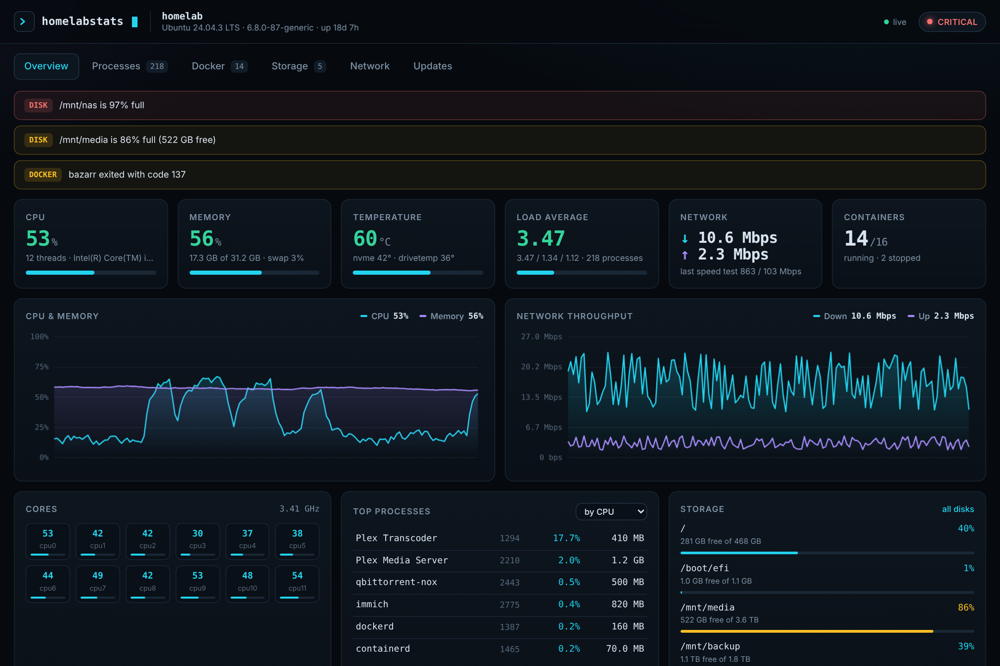

HomeLabStats is a fast, good-looking dashboard for your Linux box. CPU, memory, every running process, your Docker containers, disk space, network health and speed tests, all live on one page.

No agents, no database, no cloud account. One small Python service reads straight from the kernel and the Docker API.
Live CPU, memory, swap, load and temperature with rolling charts and per-core bars.
Every process on the host, sortable by CPU, memory, threads or age, with full command lines.
Running and stopped containers with health, CPU, memory, network I/O, ports and uptime.
Used, free and total for every real disk, including mounted SMB and NFS shares, plus live read/write activity.
Gateway, internet and LAN pings, DNS lookups, HTTPS reachability and your public IP in one click.
Cloudflare or Ookla speed tests with download, upload, ping and jitter, plus a history chart.
New version out? See exactly what changed, hit Update, and it pulls, installs and restarts itself.
Password protected, read-only access to the host, no telemetry and no external assets. Runs happily offline.
Six focused views, refreshing live. Or open the interactive demo and click around yourself.
Pick Docker Compose (recommended) or run it straight on the host as a systemd service. Then open http://your-server:8090.
Runs in one container with read-only access to the host so it can see everything.
Set DASH_PASSWORD and add your own devices to PING_TARGETS. This file is yours: updates never touch it.
Browse to http://<server-ip>:8090 and sign in as admin.
Installs into /opt/homelabstats with its own Python venv, service user and a generated password.
Change it any time in /etc/homelabstats.env, then restart:
Use the Updates tab in the dashboard, or re-run the installer at any time.
Open the Updates tab and click Update now. It shows the changelog, installs the new version and restarts itself. Set AUTO_UPDATE=true to skip the click.
The Docker socket gives root-level control. Always set a password, and reach it remotely over Tailscale or a VPN rather than port forwarding.
Install lm-sensors and run sudo sensors-detect on the host. NVMe and drivetemp drive temps show up automatically.
Set these in .env (Docker) or /etc/homelabstats.env (bare metal), then restart.
| Variable | Default | What it does |
|---|---|---|
| PORT | 8090 | Port the dashboard listens on. |
| DASH_USER / DASH_PASSWORD | admin / (none) | HTTP basic auth. Leave the password empty to disable auth (not recommended). |
| ALLOW_CONTAINER_ACTIONS | false | Show start, stop and restart buttons on the Docker tab. |
| PING_TARGETS | 1.1.1.1,8.8.8.8,google.com | Hosts pinged by the connectivity checks. Add your NAS, router or Tailscale peers. |
| DNS_NAMES | google.com,cloudflare.com,github.com | Names resolved to test DNS. |
| HTTP_CHECKS | google 204, github.com | URLs fetched to confirm HTTPS works end to end. |
| SPEEDTEST_INTERVAL_HOURS | 0 | Run a Cloudflare speed test automatically every N hours. 0 means manual only. |
| UPDATE_CHECK_HOURS | 6 | How often to check GitHub for a new version. |
| AUTO_UPDATE | false | Install new versions automatically when they are released. |
| DISK_PATHS | (auto) | Comma separated mount points to show instead of auto-detecting. |
| SAMPLE_INTERVAL | 2 | Seconds between samples for the live charts. |
Free and open source under the MIT licence.